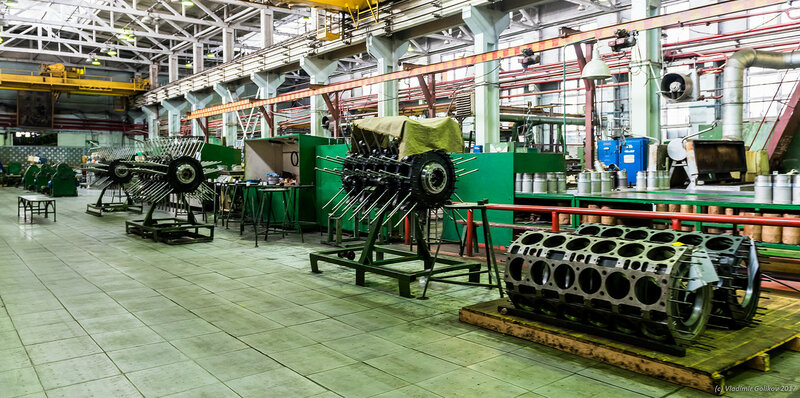

Публичное акционерное общество «Звезда»
Публичное акционерное общество «Звезда» (ПАО «Звезда») — одно из крупнейших машиностроительных предприятий России, расположенное в Санкт-Петербурге. Компания специализируется на производстве высокооборотных дизельных двигателей, судовых редукторов и дизель-генераторных установок, обслуживая как гражданские, так и оборонные отрасли.
- Год основания: 1932 год
- Генеральный директор: Пётр Петрович Скворцов
- Основная деятельность: производство дизельных двигателей, судовых редукторов, дизель-генераторов и электростанций
- Официальный сайт: Официальный сайт ПАО «Звезда»
Завод был основан в 1932 году на базе машиностроительного отдела завода «Большевик» (ныне Обуховский завод) и первоначально специализировался на производстве танков. Во время Великой Отечественной войны предприятие внесло значительный вклад в оборонную промышленность, выпуская танки и их комплектующие. С 1945 года началось производство судовых дизельных двигателей, которые впоследствии стали основой для множества проектов катеров и кораблей. В 1960-х годах завод освоил серийное производство звездообразных дизельных двигателей ЧН16/17, не имевших аналогов в мире, что стало поводом для присвоения предприятию названия «Звезда».
ПАО «Звезда» осуществляет полный цикл производства, включая разработку, изготовление,
испытания и сервисное обслуживание продукции. Основные направления деятельности:
- Судостроение: дизельные двигатели и редукторы для катеров, сторожевых кораблей и судов на подводных крыльях
- Железнодорожный транспорт: двигатели для дизель-поездов, автомотрис и рельсовых автобусов
- Энергетика: дизель-генераторные установки и автоматизированные электростанции для промышленных и оборонных объектов
- Сервисные услуги: пусконаладочные работы, обучение персонала, ремонт и поставка запчастей
ПАО «Звезда» — единственное предприятие в России, разрабатывающее и производящее высокооборотные судовые дизельные двигатели мощностью от 500 до 7400 кВт с минимальными весогабаритными показателями. За почти 60 лет дизелестроительной истории ПАО «Звезда» разработано и передано в эксплуатацию более 200 модификаций двигателей типоразмеров ЧН18/20 и ЧН16/17.
Современные патрульные катера «Мираж», «Сокжой», «Меркурий» на базе двигателей ПАО «Звезда» ЧН16/17 достигают скорости 50 и более узлов, а пассажирское судно на подводных крыльях «Ласточка-М», оснащенное двигателями ЧН18/20, развивает рекордную скорость до 90 км/час.
ПАО «Звезда» активно внедряет цифровые технологии в производственные процессы, включая автоматизированное проектирование, числовое программное управление и системы мониторинга технического состояния оборудования. Это позволяет существенно повысить точность и надёжность выпускаемой продукции, сократить сроки разработки и снизить издержки на всех этапах жизненного цикла изделий.
Важным направлением развития предприятия является экспортная деятельность. Продукция компании поставляется в страны Азии, Ближнего Востока и Латинской Америки, где особенно ценится надёжность и ремонтопригодность российских дизельных двигателей. ПАО «Звезда» укрепляет свои позиции на международных рынках, участвуя в профильных выставках и форумах, заключая долгосрочные контракты с зарубежными партнёрами.
